Ultrasonido abdominal
Apoya la valoración de órganos abdominales.
- Hígado, vesícula y vías biliares.
- Páncreas, bazo y riñones.
- Pregunta por preparación antes de acudir.
Ultrasonido y Rayos X con lectura médica profesional, atención cálida y una experiencia pensada para que el paciente se sienta orientado desde el primer contacto.
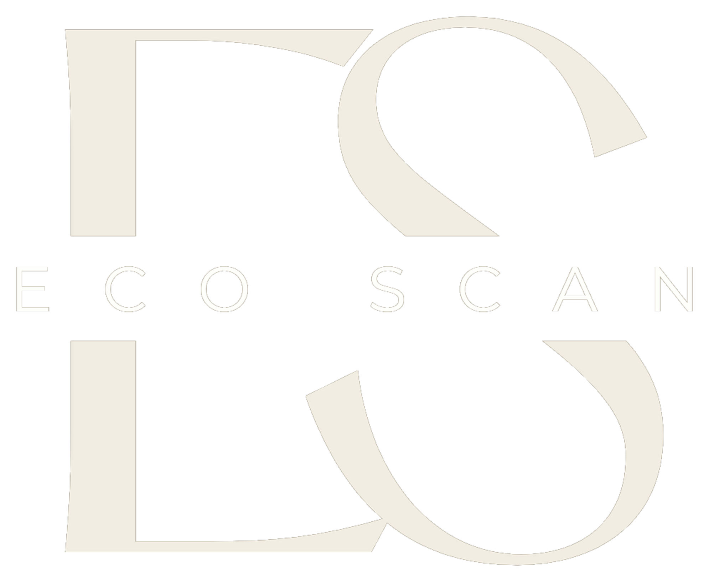
El valor está en hacer el estudio correcto, explicarlo con claridad y entregar información que ayude a tomar mejores decisiones clínicas.
Confianza para correlacionar los hallazgos con el motivo del estudio.
Te orientamos antes de acudir para evitar vueltas innecesarias.
Servicios de imagen organizados por necesidad del paciente.
Diseño, atención y comunicación pensados para transmitir confianza.
Revisa cada estudio en esta misma página y agenda por WhatsApp si necesitas orientación.
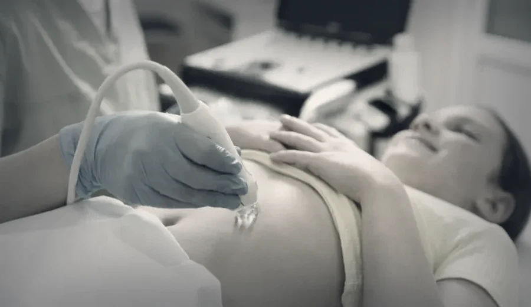
Evaluación de órganos abdominales y vías biliares.
Ver detalle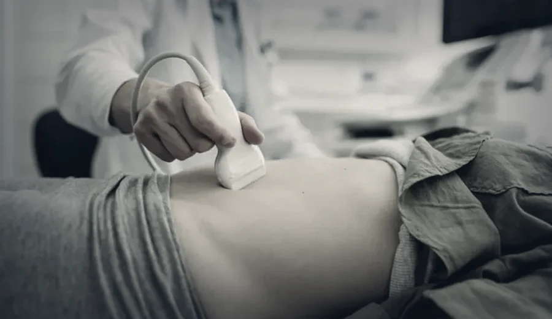
Útero, endometrio, ovarios y anexos.
Ver detalle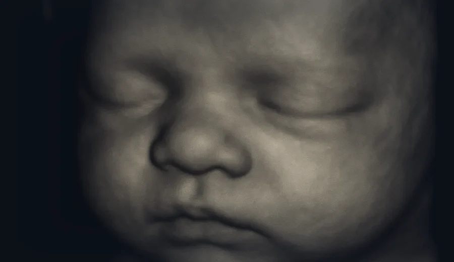
Seguimiento del embarazo con imagen 2D y 4D.
Ver detalle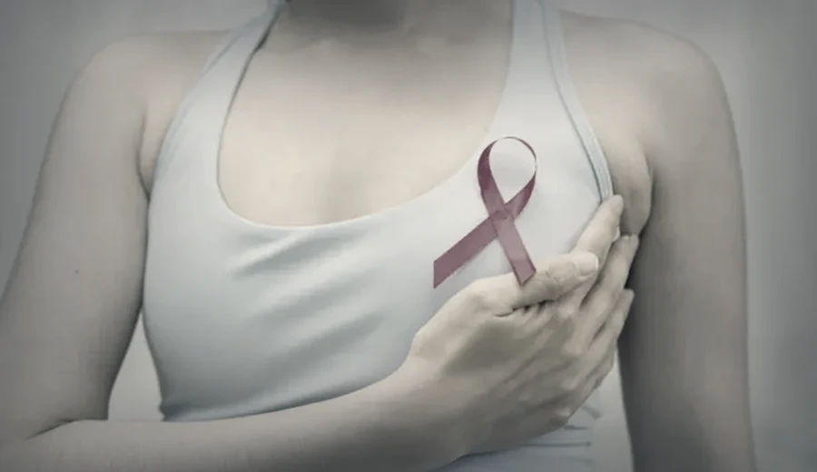
Estudio complementario para evaluación mamaria.
Ver detalle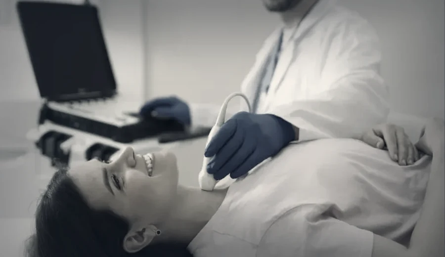
Tiroides, cuello y ganglios cervicales.
Ver detalle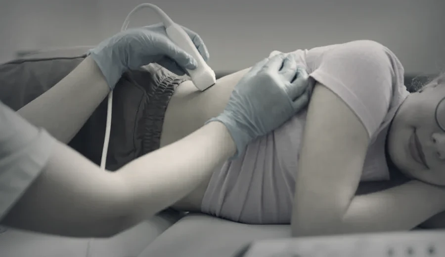
Riñones, vejiga y próstata en hombres.
Ver detalle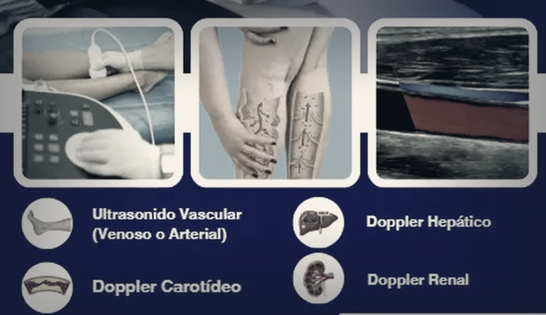
Evaluación vascular arterial, venosa y obstétrica.
Ver detalle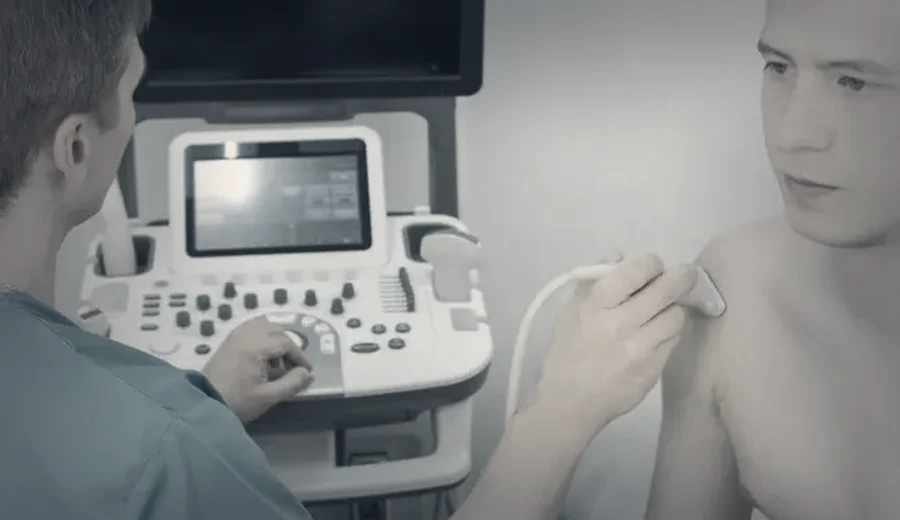
Hombro, rodilla, tobillo, manos y articulaciones.
Ver detalle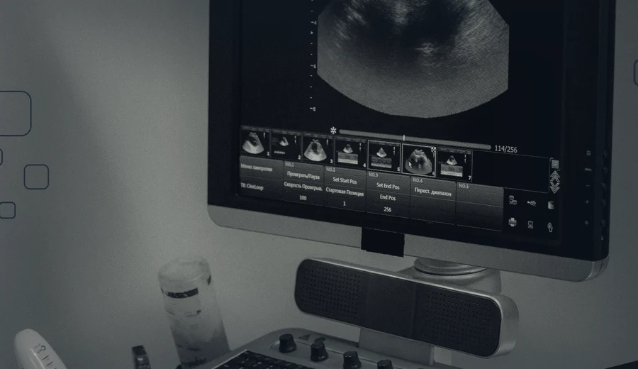
Partes blandas, testicular, inguinal y otros según indicación.
Ver detalleConsulta qué evalúa cada estudio y pregunta por la preparación antes de acudir.
Apoya la valoración de órganos abdominales.
Evaluación de órganos pélvicos femeninos.
Seguimiento de embarazo con imagen 2D y 4D.
Estudio complementario para evaluación mamaria.
Exploración de tiroides, cuello y ganglios.
Evaluación de riñones, vejiga y próstata en hombres.
Evalúa flujo sanguíneo arterial o venoso.
Valoración de articulaciones y tejidos blandos.
Consulta por otros estudios disponibles según la indicación médica.
Si tu médico solicitó Rayos X, te orientamos sobre el tipo de placa, la preparación y el momento adecuado para acudir.
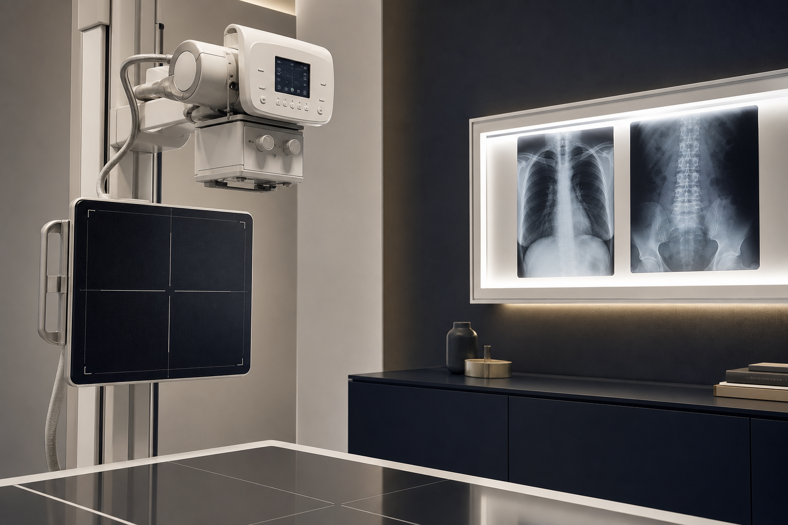
EcoScan se presenta como un espacio médico serio, limpio y humano. La prioridad es que cada paciente sepa qué estudio necesita, cómo agendar y qué esperar.
“Excelente servicio, muy profesional. Me explicó el estudio con calma y salí tranquila.”
Paciente EcoScan“Atención rápida, instalaciones limpias y equipo moderno. Muy recomendable.”
Paciente EcoScan“Me explicaron con claridad y me sentí en confianza durante todo el estudio.”
Paciente EcoScanBlvd. Antonio Madrazo 1102-Local C, El Cortijo, 37250 León de los Aldama, Gto.
Agenda por WhatsApp o llama para confirmar disponibilidad, preparación y horarios.
Blvd. Antonio Madrazo 1102-Local C, El Cortijo, 37250 León de los Aldama, Gto.
Abrir en Google Maps